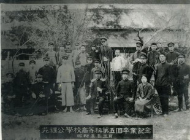
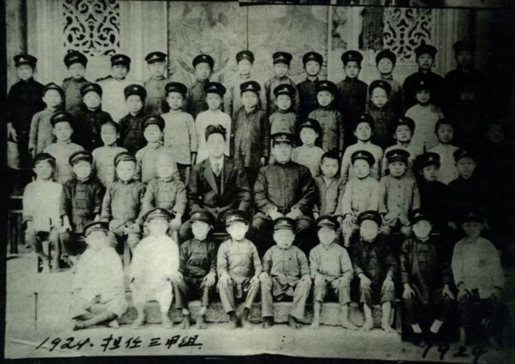
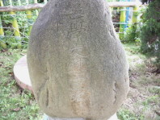
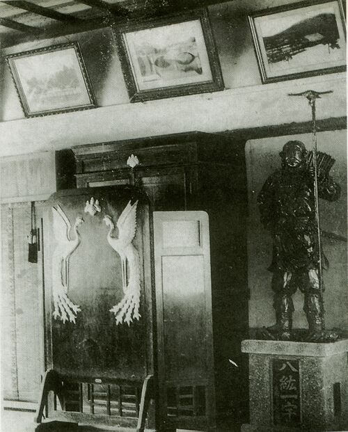
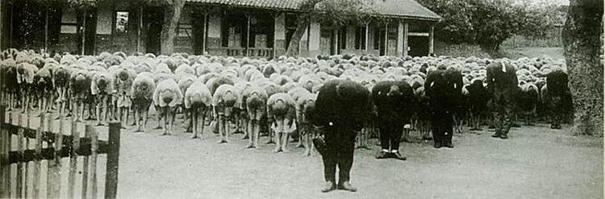
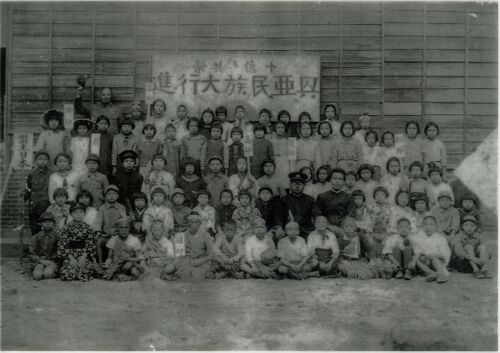
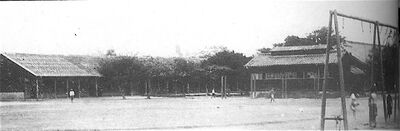
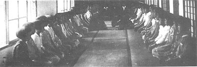

1912 民國元年［第9屆］
1913 民國二年［第10屆］
※ 民國二年四月第四任校長大苗大雅就任
1914 民國三年［第11屆］
1915 民國四年［第12屆］
※ 民國四年五月第五任校長柳本貞吾就任
1916 民國五年
1917 民國六年
1918 民國七年
1919 民國八年
※ 民國八年二月第六任校長寺內明就任
※ 民國八年四月第七任校長河本金朝就任
1920 民國九年
※ 民國九年三月：第一次有女性畢業生計八名（第十七屆）
※ 民國九年九月第八任校長別府重登就任
1921 民國十年
※ 民國十年四月第九任校長中尾治就任
1922 民國十一年
1923 民國十二年
1924 民國十三年
※ 民國十三年八月第十任校長白山吉助就任 .
※ 依公學校得附設高等科之規則 , 招收高等科學生一班 , 公學校學制分尋常科及高等科 , 高等科設於中正里 , 於本校尋常科就讀六年可經考試至高等科就讀二年 ., 至民國二十一年止共畢業學生七班 , 計 325 人 .


畢業班媽祖廟前合影
1925 民國十四年
1926 民國十五年
1927 民國十六年
1928 民國十七年
1929 民國十八年
1930 民國十九年
1931 民國二十年
※ 朝會升旗集合地點為現今活動中心至籃球場一帶 ( 開始時間不可考 ), 全體要向亡學友慰靈碑 ( 仍存現校地內 , 何時設立已不可考 ) 行禮 , 以懷念及紀念在學期間死亡學生 ( 時值醫學不發達時代 , 常有學生因病過世 ), 另於每年春秋兩季舉行祭拜典禮以慰在天之靈 . 另有一說 ( 取自柿子文化 2004 年 3 月出版 - 大人的小學時代 - ㄧ書第 204 頁記載 ) ： 石碑是為了紀念 1935 年 ( 民國 24 年 ) 關刀山大地震時死去的學生。

1932 民國二十一年
1933 民國二十二年
1934 民國二十三年
1935 民國二十四年
1936 民國二十五年
1937 民國二十六年
※ 民國二十六年十一月第十一任校長鈴木彌一就任
1938 民國二十七年［第35屆］
1939 民國二十八年［第36屆］
※ 昭和十四年全校生徒約 1350 人 .
※ 苑裡公學校附設幼稚園設置於慈和宮舊址北邊的一棟木造教室，園長為鄭秀枝女士 .
1940 民國二十九年［第37屆］
1941 民國三十年［第38屆］
※ 民國三十年四月：苑裡公學校改稱為苑裡國民學校 .
※ 日本政府推行 - 皇民化運動 - 加強灌輸軍國主義的皇民思想 . 校園廣場（即今日籃球場東邊兩側）南面，建置了一座小型而精緻的神社，學生上下學時，一定要恭敬地向神社行鞠躬禮；在北面一棵高聳的茄苳樹下，則有一座升旗台，早會即在此地舉行。每日升旗後，全體師生再轉向北方遙拜天皇所居住的「宮城」，若逢節慶，日籍校長，更需恭讀「勑語」（天皇訓示的詔書 ) 隨著戰事日趨白熱化，學校也規定全體學生，需於每日清早天未亮前，務必依部落別，聚集在指定的廣場，在上級生的監督之下，配合全國廣播系統，做健康操運動。上學時，亦以部落別整隊，由上級生領導，齊唱愛國軍歌直到學校。


※ 配合宣揚日本帝國主義 , 學生以話劇表演方式扮演各國國民宣誓各民族大團結 , 口號為 < 十億共榮興亞民族大行進 >.

1942 民國三十一年［第39屆］
※ 民國三十一年四月第十二任校長田山平治就任
1943 民國三十二年［第40屆］
※ 民國三十二年四月第十三任校長遠矢弘志就任
※ 民國三十二年七月第十四任校長中原重美就任
※ 以美國為首的盟軍 , 開始空襲台灣 , 學校因而呈現半停頓狀態：沒有固定的日課表和受持先生。只要空襲警報的「水螺聲」一響，即使仍在上課中，師生得急忙跑到東邊的大水溝，或到流經校園內的灌溉埤圳避難 .


1944 民國三十三年［第41屆］
※ 日本開始實施「徵兵制」，學校教員陳瑞鑫先生也身披「志願兵」的紅綵帶，在全校學生的熱烈歡送下，到火車站搭乘專車，南下踏上征途。